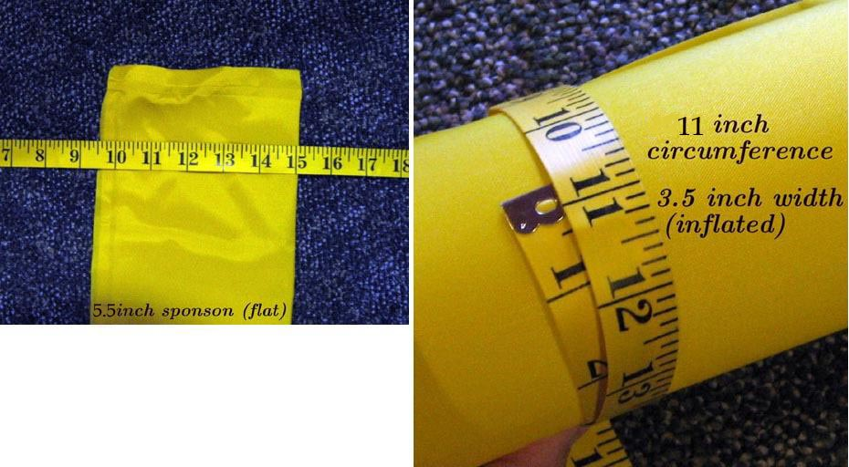

| Sonnet ( Sponson / Sleeves) | Menu Previous Page Next Page |
|

The Sonnet 16 uses Folbot Greenland II - 15' (457cm) upper sponsons and Folbot Kodiak - 13.5' (411cm) lower sponsons and the Sonnet 14 uses Folbot Kodiak - 13.5' (411cm) upper sponsons and Folbot Aleut - 11' (335cm) lower sponsons. The sponsons are approximately 5" (12.7cm) wide when flat ( excluding the seam) , 3.5" (8.9cm) wide inflated, and they have a circumference of approx. 11" (28cm) when inflated. These measurements are used when computing the dimensions of the sponson sleeves on the next page.
Note: Sponson circumference can vary between sponsons, and this must to be considered in determing the size of the sleeves. Inflate the sponsons and measure the circumference. That number will be used in determining the sponsons sleeve size. |
|